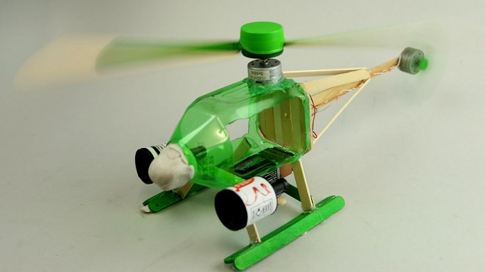
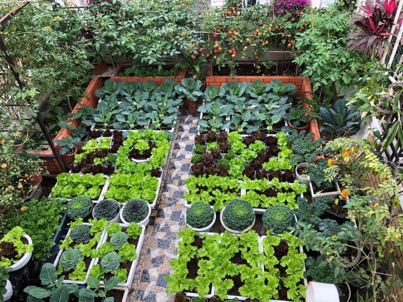

Easy Home Composting Guide
With just a foam box and kitchen organic waste, I created quality compost for my small garden. A detailed A-Z guide...

Together we change for a cleaner, greener Vietnam
With just a foam box and kitchen organic waste, I created quality compost for my small garden. A detailed A-Z guide...

Turn cardboard rolls into creative toys for children, both economical and environmentally friendly. Includes downloadable templates...
My experience challenging myself to avoid single-use plastics for a month. The difficulties and valuable lessons learned...
Sharing how I designed a small garden that provides fresh vegetables year-round for my family, even when living in an apartment...
I have many old batteries I'm not using anymore. Does anyone know if there are collection points for old batteries in Hanoi? Please share if you know any!
Sharing my experience on how to shop with minimal plastic waste: bringing cloth bags, containers, buying in bulk...
Thong Nhat Park, Hanoi
Join us to exchange recyclable waste for gifts and learn effective waste sorting methods
Cultural Center, Da Nang
Learn how to live environmentally friendly through small daily habits
Cultural Center, Da Nang
Learn how to live environmentally friendly through small daily habits
University of Agriculture and Forestry, Hanoi
Sharing experiences in growing clean vegetables at home and sustainable urban agriculture solutions
Shared 42 helpful articles
Organized 5 environmental events
Join the WasteLess community today to share knowledge, experiences, and spread green living.